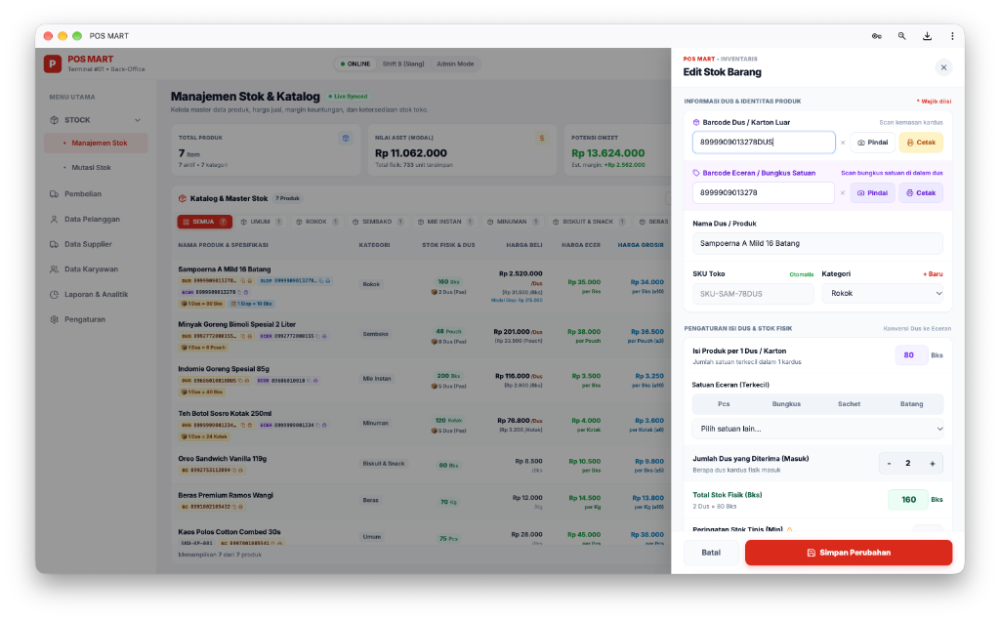
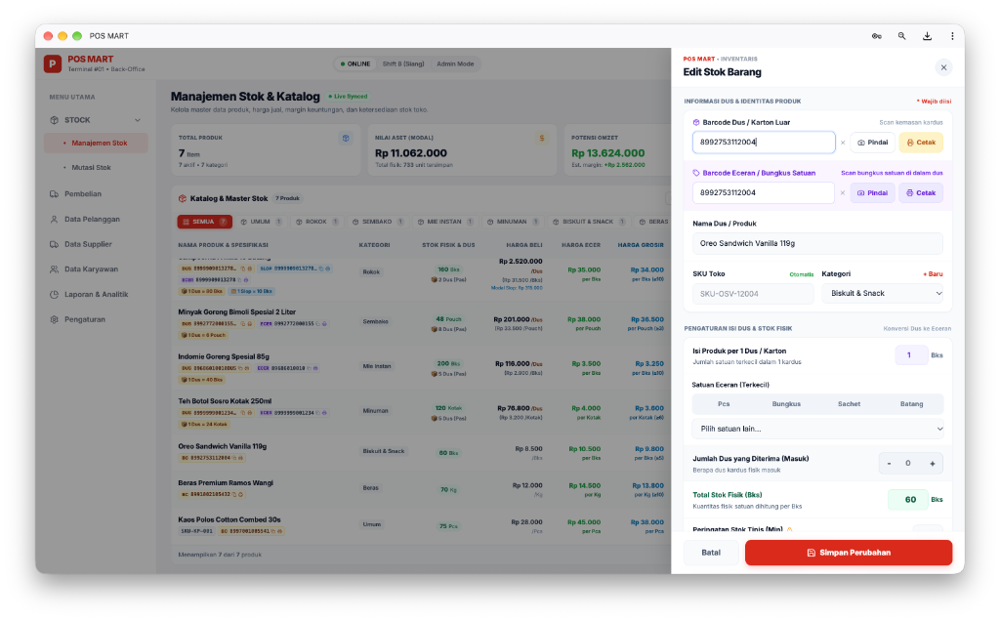
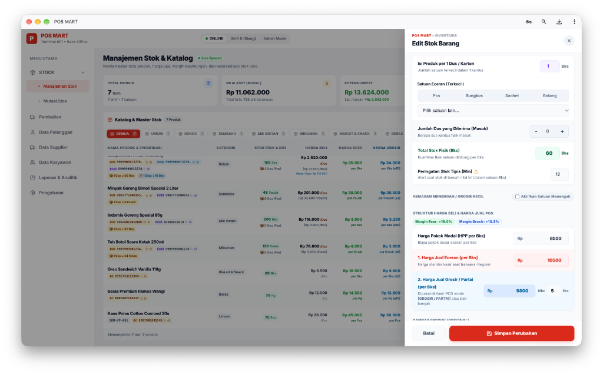
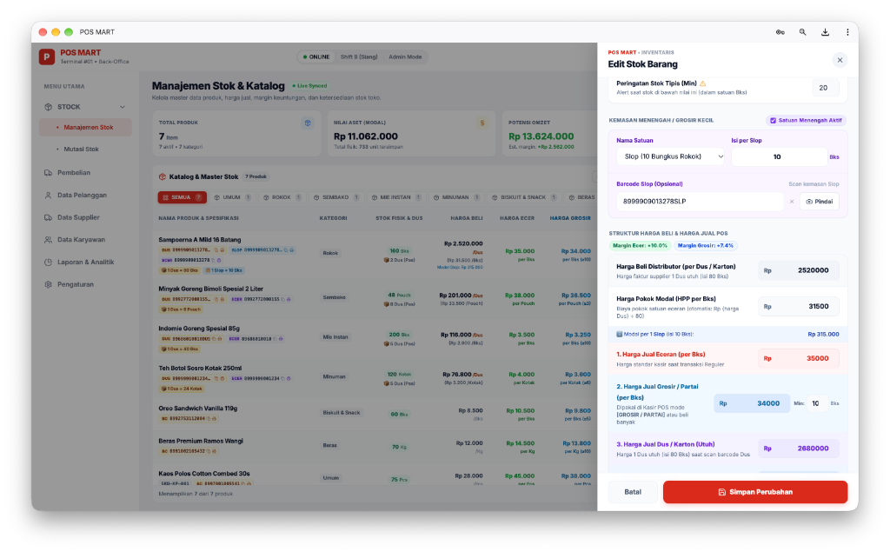
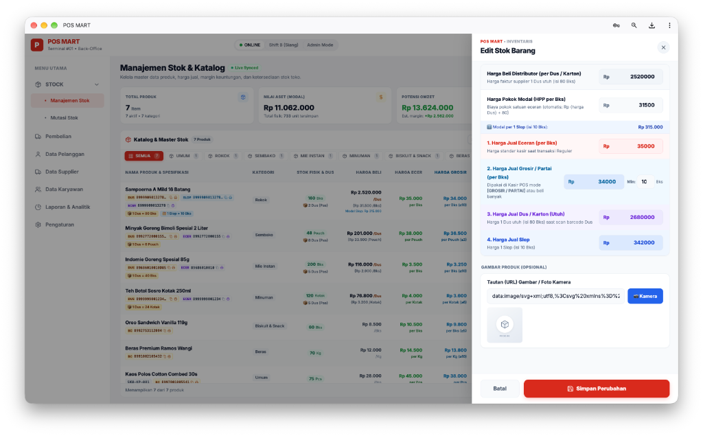

Bingung mau mulai dari mana? Kalau baru pertama kali, baca Bab 1 sampai Bab 5 dulu ya.
POS MART itu apa, dan siapa yang memakainya?
POS MART adalah aplikasi untuk toko / swalayan / grosir. Aplikasi ini punya dua “ruangan”:
| Peran | Biasanya mengerjakan |
|---|---|
| Pemilik / Admin | Mengatur harga, melihat laporan, mengelola karyawan, pengaturan toko, export/import Excel. |
| Supervisor | Membantu admin, menyetujui hal-hal penting di kasir (misalnya ubah harga khusus). |
| Admin Gudang | Memasukkan barang baru, mencatat barang datang, cetak barcode. |
| Kasir | Melayani pembeli di layar Kasir (POS). |
Kata-kata yang sering muncul di layar, dijelaskan seperti ke anak kecil.
| Kata | Artinya (bahasa bayi) |
|---|---|
| Dus / Karton | Kardus besar dari pabrik/supplier. Di dalamnya ada banyak barang kecil. Contoh: 1 dus rokok isinya 80 bungkus. |
| Eceran / Satuan | Barang yang paling kecil yang dijual satu-satu. Contoh: 1 bungkus rokok, 1 bungkus Indomie, 1 sachet kopi. |
| Kemasan Menengah | Ukuran tengah-tengah antara dus dan eceran. Contoh: Slop (10 bungkus rokok), Renceng (10 sachet kopi), Pack, Lusin (12). |
| Barcode | Garis-garis hitam putih di bungkus barang. Kalau ditembak alat scanner, aplikasi langsung tahu itu barang apa. |
| Barcode Dus | Barcode yang ada di kardus luar. Biasanya beda dengan barcode di bungkus kecilnya. |
| Barcode Eceran | Barcode yang ada di bungkus kecil (yang dijual satuan). |
| Pindai | Membaca barcode pakai kamera HP/laptop (kalau tidak punya alat scanner). |
| SKU | Kode toko sendiri untuk barang (seperti nomor rak). Dibuat otomatis, boleh dibiarkan. |
| Kategori | Kelompok barang, misalnya Rokok, Sembako, Minuman. Biar gampang dicari. |
| Harga Beli Distributor | Harga yang kamu bayar ke supplier untuk 1 dus utuh. |
| HPP / Harga Pokok Modal | Modal untuk 1 barang eceran. Kalau beli 1 dus Rp 2.520.000 isinya 80, berarti modal 1 bungkus = Rp 31.500. |
| Harga Jual Eceran | Harga normal kalau pembeli beli satu-satu. |
| Harga Grosir / Partai | Harga lebih murah per satuan kalau pembeli beli banyak (minimal jumlah tertentu). |
| Harga Jual Dus | Harga kalau pembeli membeli satu dus utuh. |
| Margin | Persen untung dari harga jual. Rumus: (Harga Jual − Modal) ÷ Harga Jual × 100%. |
| Stok Fisik | Jumlah barang yang benar-benar ada di toko (dalam satuan eceran). |
| Stok Tipis (Min) | Batas “alarm”. Kalau stok turun sampai angka ini, aplikasi memberi tanda supaya kamu cepat belanja lagi. |
| Mutasi Stok | Catatan barang masuk dan keluar (selain penjualan kasir). |
| Hold | Menunda / “memarkir” belanjaan pembeli sebentar di kasir, lalu dilanjutkan nanti. |
| Tempo / Piutang | Pembeli bayar belakangan (ngutang). Aplikasi mencatat sisa utangnya. |
| Hutang Supplier | Kebalikan tempo: toko yang belum lunas bayar ke supplier. |
Di folder aplikasi ada beberapa file “tombol ajaib” berakhiran .command. Cukup klik 2 kali.
| Nama File | Gunanya |
|---|---|
JALANKAN_SERVER.command | 🟢 Menyalakan aplikasi. Browser akan terbuka sendiri ke http://localhost:5173. |
RESTART_SERVER.command | 🔄 Mematikan lalu menyalakan lagi (kalau aplikasi terasa macet). |
BERHENTIKAN_SERVER.command | 🔴 Mematikan aplikasi. |
RESET_FACTORY_DATABASE.command | 🧹 Menghapus semua data, kembali seperti baru (lihat Bab 13). Hati-hati! |
JALANKAN_SERVER.command. Akan muncul jendela hitam (Terminal).Ada 2 cara masuk:
| Akun bawaan (setelah reset pabrik) | Username | Password | PIN |
|---|---|---|---|
| Administrator | admin | admin | 123456 |
| Kasir 1 | kasir | kasir | 111111 |
Menu di sebelah kiri layar itu seperti pintu-pintu ke ruangan berbeda.
| Menu | Isinya apa? |
|---|---|
| STOCK → Manajemen Stok | Daftar semua barang: nama, barcode, stok, harga. Tempat tambah/edit barang. (Bab 5–7) |
| STOCK → Mutasi Stok | Catatan barang masuk, keluar, dan penyesuaian (stok opname). (Bab 9) |
| Pembelian | Mencatat belanja ke supplier & penerimaan barang. (Bab 9) |
| Data Pelanggan | Daftar pembeli langganan, riwayat belanja, dan piutang tempo. |
| Data Supplier | Daftar pemasok, termin bayar, dan hutang toko. |
| Data Karyawan | Akun admin/kasir, password, PIN, shift. |
| Laporan & Analitik | Omzet, untung, barang terlaris, metode bayar. |
| Pengaturan | Nama toko, logo, pajak, pembulatan, kepala/kaki struk, Export/Import Excel. |
Ini halaman yang paling sering dibuka. Kita baca dari atas ke bawah, pelan-pelan.

| Kotak | Contoh | Artinya |
|---|---|---|
| TOTAL PRODUK | 7 Item · 7 aktif · 7 kategori | Ada 7 jenis barang di toko, semuanya aktif (tampil di kasir), terbagi ke 7 kelompok. |
| NILAI ASET (MODAL) | Rp 11.062.000 · Total fisik 733 unit | Kalau semua barang di toko dihitung pakai harga modal, nilainya Rp 11 juta. Total ada 733 barang eceran. |
| POTENSI OMZET | Rp 13.624.000 · Est. margin +Rp 2.562.000 | Kalau semua barang laku terjual dengan harga eceran, uang yang masuk Rp 13,6 juta, dan untungnya kira-kira Rp 2,5 juta. |
Seperti laci-laci. Klik “ROKOK” → yang tampil hanya rokok. Angka kecil di sebelahnya = jumlah barang di laci itu. Klik “SEMUA” untuk melihat semua lagi.
| Kolom | Cara membacanya |
|---|---|
| Nama Produk & Spesifikasi | Nama barang + label-label kecil berwarna (lihat 5.4). |
| Kategori | Kelompok barangnya. |
| Stok Fisik & Dus | Baris hijau = stok dalam eceran (misal 160 Bks). Baris bawah = terjemahan ke dus (misal 2 Dus (Pas)). |
| Harga Beli | Modal. Barang ber-dus: tampil per Dus (Rp 2.520.000/Dus) + di bawahnya modal per eceran [Rp 31.500 /Bks] + modal per Slop kalau ada. |
| Harga Ecer | Harga jual normal per satuan kecil (hijau). |
| Harga Grosir | Harga grosir per satuan + syarat minimal. Contoh “Rp 34.000 per Bks (≥10)” = berlaku kalau beli 10 bungkus atau lebih. |
| Label | Artinya |
|---|---|
| DUS 89999... | Barcode kardus luar. |
| ECER 89999... | Barcode bungkus satuan (eceran). |
| SLOP 89999... | Barcode kemasan menengah (slop/renceng/pack). |
| BC 89927... | Barcode biasa untuk barang yang tidak punya dus (dijual satuan saja). |
| SKU-KP-001 | Kode toko (barang tanpa barcode pabrik). |
| 📦 1 Dus = 80 Bks | Isi 1 kardus. |
| 1 Slop = 10 Bks | Isi 1 kemasan menengah. |
| Ikon 🖨 / ⧉ di sebelah barcode | Cetak label barcode / salin angka barcode. |
Formulir ini muncul di kanan layar saat kamu klik sebuah barang atau tombol tambah barang. Isinya ada 5 bagian, dari atas ke bawah.
| Kolom | Isinya apa & contoh |
|---|---|
| Barcode Dus / Karton Luar | Tembak barcode di kardus besarnya. Contoh 8999909013278DUS. Kalau barang tidak dijual per dus, biarkan kosong. |
| Barcode Eceran / Bungkus Satuan | Tembak barcode di bungkus kecilnya. Contoh 8999909013278. Ini yang paling penting, karena ini yang paling sering di-scan kasir. |
| Tombol Pindai | Pakai kamera untuk membaca barcode kalau tidak punya alat scanner. |
| Tombol Cetak | Mencetak stiker barcode (Bab 11). Ada untuk dus dan untuk eceran. |
| Tanda × | Menghapus isi kolom barcode. |
| Nama Dus / Produk | Nama barang yang akan tampil di kasir dan struk. Tulis jelas: merek + ukuran. Contoh “Sampoerna A Mild 16 Batang”. |
| SKU Toko Otomatis | Dibuat sendiri oleh aplikasi. Tidak perlu diubah. |
| Kategori + + Baru | Pilih kelompok barang. Kalau belum ada, klik “+ Baru” untuk membuat kategori baru. |


| Kolom | Isinya apa & contoh |
|---|---|
| Isi Produk per 1 Dus / Karton | Ada berapa barang kecil di dalam 1 kardus. Rokok = 80, Indomie = 40, Teh kotak = 24, Minyak 2L = 6. Barang tanpa dus = 1. |
| Satuan Eceran (Terkecil) | Nama satuan kecilnya. Klik salah satu: Pcs, Bungkus, Sachet, Batang, atau pilih yang lain dari daftar “Pilih satuan lain...” (Kg, Liter, Kotak, Pouch, dll). |
| Jumlah Dus yang Diterima (Masuk) | Tombol − dan + untuk menghitung berapa kardus yang datang. Aplikasi otomatis mengalikan dengan isi dus. |
| Total Stok Fisik (Bks) kotak hijau | Jumlah barang yang benar-benar ada, dalam satuan kecil. Di bawahnya ada keterangan, misal “2 Dus × 80 Bks”. |
| Peringatan Stok Tipis (Min) ⚠️ | Angka alarm. Contoh 20: kalau stok tinggal 20 bungkus atau kurang, barang ditandai “Menipis” supaya kamu segera belanja. |

Centang “Aktifkan Satuan Menengah” kalau barangmu juga dijual dalam ukuran tengah. Kalau tidak, biarkan tidak dicentang.
| Kolom | Isinya apa & contoh |
|---|---|
| Nama Satuan | Pilih: Slop (rokok), Renceng (sachet), Pack, Lusin, dll. |
| Isi per Slop | Berapa barang kecil di 1 kemasan menengah. Contoh 10. |
| Barcode Slop (Opsional) | Barcode di bungkus slop-nya, kalau ada. Contoh 8999909013278SLP. |

Margin Ecer: +10.0% dan Margin Grosir: +7.4% = persen untung kalau dijual ecer dan grosir. Dihitung otomatis.
| Kolom | Isinya apa & contoh |
|---|---|
| Harga Beli Distributor (per Dus / Karton) | Harga di faktur supplier untuk 1 dus utuh. Contoh Rp 2.520.000. (Hanya muncul kalau isi dus lebih dari 1.) |
| Harga Pokok Modal (HPP per Bks) | Modal 1 barang kecil. Dihitung otomatis: harga dus ÷ isi dus. Untuk barang tanpa dus, isi langsung di sini. |
| Modal per 1 Slop (baris biru tipis) | Info otomatis: HPP × isi slop. Contoh Rp 31.500 × 10 = Rp 315.000. |
| Harga | Kapan dipakai kasir? | Contoh |
|---|---|---|
| 1. Harga Jual Eceran (per Bks) | Harga normal. Dipakai saat kasir scan barcode eceran di mode Reguler. | Rp 35.000 |
| 2. Harga Jual Grosir / Partai (per Bks) + Min | Dipakai saat kasir memakai mode GROSIR / PARTAI, atau pembeli beli sebanyak angka Min atau lebih. | Rp 34.000, Min 10 |
| 3. Harga Jual Dus / Karton (Utuh) | Dipakai saat kasir scan barcode dus. Stok berkurang sebanyak isi dus (80 bungkus) sekaligus. | Rp 2.680.000 |
| 4. Harga Jual Slop | Dipakai saat kasir scan barcode slop atau memilih kemasan slop. Stok berkurang 10 bungkus. | Rp 342.000 |
Tempel alamat gambar (URL) atau klik tombol biru Kamera untuk memotret barang. Foto akan tampil di kartu produk di layar kasir, jadi kasir lebih cepat mengenali barang. Boleh dikosongkan.
Ikuti seperti resep masak. Pilih resep sesuai jenis barangmu.
| Jenis barang | Barcode Dus | Isi per Dus | Satuan Menengah | Harga Dus |
|---|---|---|---|---|
| Eceran saja | Kosong | 1 | Tidak | Kosong |
| Ada dus | Diisi | > 1 | Tidak | Diisi |
| Dus + slop/renceng | Diisi | > 1 | Ya | Diisi |
| Barang timbang (beras, gula) | Kosong | 1 | Tidak | Kosong · Satuan = Kg |
Dari pembeli datang sampai struk keluar.
| Yang di-scan kasir | Masuk keranjang sebagai | Stok berkurang |
|---|---|---|
| Barcode Eceran | 1 bungkus, harga ecer (atau grosir di mode Grosir) | 1 bungkus |
| Barcode Slop | 1 slop, Harga Jual Slop | 10 bungkus |
| Barcode Dus | 1 dus, Harga Jual Dus | 80 bungkus |
Kalau produk punya beberapa kemasan, kadang muncul jendela pilihan kemasan (DUS / SLOP / GROSIR / ECERAN). Kasir tinggal klik yang diminta pembeli.
| Fitur | Gunanya |
|---|---|
| F5 Hold | Memarkir belanjaan (misal pembeli lupa dompet). Buka lagi lewat tombol daftar Hold di atas. |
| Enter | Konfirmasi / lanjut setelah scan atau isi angka. |
| TEMPO | Pembeli bayar belakangan, bisa pakai DP (uang muka). Sisa utang tercatat di Data Pelanggan. |
| Harga khusus | Mengubah harga 1 barang untuk transaksi tertentu (bisa butuh PIN Supervisor/Admin). |
| Barang tidak terdaftar | Kalau barcode belum ada di data, muncul jendela untuk mendaftarkannya cepat. |
| Jenis | Contoh kejadian |
|---|---|
| MASUK (IN) | Barang datang, kiriman dari cabang, bonus dari supplier. |
| KELUAR (OUT) | Barang rusak, kedaluwarsa, dipakai sendiri, dikirim ke cabang. |
| PENYESUAIAN | Stok opname: hitung barang di rak, lalu samakan dengan angka di aplikasi. |
Untuk barang yang tidak punya barcode pabrik, atau barcode-nya rusak.
Cara cepat memasukkan ratusan barang sekaligus, atau menyimpan cadangan data.
Menu Pengaturan → Export/Import → klik Export. Akan terunduh 1 file Excel berisi banyak sheet: Laporan & Analitik, Manajemen Stok, Varian Produk, Mutasi Stok, Pembelian Supplier, Data Pelanggan, Riwayat Order, Data Supplier, Data Karyawan, Transaksi Kasir.
| Kolom Excel | Isi |
|---|---|
| ID Produk (Opsional) | Kosongkan untuk barang baru. Isi hanya untuk meng-update barang lama (dari file hasil export). |
| Barcode Dus (Karton) | Barcode kardus. Kosongkan kalau tidak ada. |
| Barcode Eceran (Satuan) | Barcode bungkus kecil. |
| SKU / Kode Rak · Nama Produk · Kategori | Identitas barang. |
| Satuan Eceran | Bks, Pcs, Sachet, Kg, Kotak, Pouch, dll. |
| Isi per 1 Dus (Pcs) | Isi kardus. Barang eceran = 1. |
| Modal Satuan (Rp) | HPP per eceran. Boleh kosong kalau Modal per 1 Dus diisi (dihitung otomatis). |
| Modal per 1 Dus (Rp) | Harga beli 1 dus. |
| Harga Jual Eceran (Rp) | Harga normal. |
| Harga Grosir Satuan (Rp) + Min. Beli Grosir (Pcs) | Harga grosir dan syarat jumlah minimalnya. |
| Harga Jual per 1 Dus (Rp) | Harga dus utuh. Kalau kosong, dihitung Ecer × Isi Dus. |
| Satuan Menengah · Isi · Harga · Barcode | Untuk slop/renceng. Boleh kosong. |
| Total Stok Fisik (Satuan) | Stok dalam satuan kecil. Kalau kosong tapi “Estimasi Stok Dus” diisi, dihitung Dus × Isi. |
| Min. Stok (Alert Tipis) · Status | Batas alarm, dan Aktif / Non-Aktif. |
| Daftar Varian Ringkas | Contoh “5Kg: 20, 10Kg: 15” (nama varian: stok). Isi “-” kalau tidak ada. |
35000. Salah: Rp 35.000.
(Aplikasi sudah mencoba membersihkan sendiri, tapi angka polos paling aman.)
RESET_FACTORY_DATABASE.command.backups/ (file .sql).| Masalahnya | Coba lakukan ini |
|---|---|
| Halaman tidak bisa dibuka / “This site can’t be reached”. | Aplikasi belum menyala. Klik 2 kali JALANKAN_SERVER.command, tunggu jendela hitam muncul. |
| Aplikasi terasa macet / data tidak berubah. | Klik RESTART_SERVER.command, lalu di browser tekan Cmd+Shift+R. |
| Scan barcode, barang tidak ketemu. | Barcode belum didaftarkan. Cek di Manajemen Stok apakah angka barcode eceran/dus sudah benar (tanpa spasi). |
| Scan bungkus kecil tapi yang masuk harga dus. | Barcode Dus dan Barcode Eceran diisi angka yang sama. Kosongkan/ubah Barcode Dus (lihat Bab 6, Bagian A). |
| Stok “Dus” tampil aneh (misal 0 Dus padahal banyak). | Periksa Isi per Dus. Kalau barang tidak ber-dus, isi 1. |
| Margin tampil minus / merah. | Harga jual lebih kecil dari modal. Periksa HPP dan harga jual. |
| Harga grosir tidak keluar di kasir. | Pastikan harga grosir diisi, jumlah beli ≥ Min, atau kasir memakai mode GROSIR/PARTAI. |
| Sudah klik Simpan tapi saat Edit lagi angkanya kosong. | Pastikan status ONLINE. Simpan ulang, lalu restart server dan cek lagi. |
| Lupa password admin. | Masuk pakai akun Admin lain dan ubah di Data Karyawan. Kalau tidak ada sama sekali, hubungi teknisi. |
| Import Excel: jumlah barang terbaca 0. | Pastikan nama sheet “Manajemen Stok” dan ada kolom “Nama Produk”. Pakai template resmi. |
JALANKAN_SERVER.command).BERHENTIKAN_SERVER.command) bila komputer akan dimatikan.— Selamat berjualan bersama POS MART —